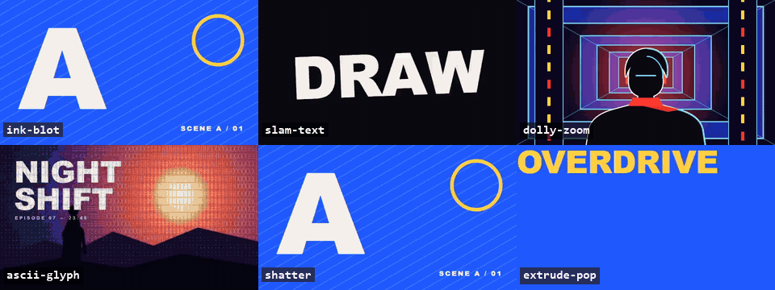

Claude Code skill · MIT
Motion design that is code.
106 frame-exact effects for PVs, trailers and kinetic type. Pick one, copy it into your Remotion project, set its props. It renders the same every time, so you can edit, re-cut and re-render.
106effects
6categories
0randomness: frame-pure
MIT+ Apache-2.0 ports

Code, not clipsEvery effect is a React component driven by the frame number. Change a prop, re-render: no generated video to throw away.
Cut to the beatThe skill measures your track's tempo grid, plans shots on it and checks the finished film for freezes, flashes and drifting cuts.
Measured, not promisedRe-rendering a frame gives the same pixels for 89 effects and at most 2 levels of rasteriser noise for the other 17.
Use it in three steps
Needs Claude Code, Node.js 18+, ffmpeg and Python 3.10+. The effects themselves only need Remotion.
1 · Install the skill
One clone into your skills folder.
git clone --depth 1 https://github.com/saikizhou-cyber/s17-motion-art.git ~/.claude/skills/s17-motion-art
2 · Ask for a film
In Claude Code, describe what you want.
/s17-motion-art Make a 30-second PV for ./track.wav, original characters, three creative directions first.
3 · Or just take an effect
Copy only the effects you use into any Remotion project.
python ~/.claude/skills/s17-motion-art/library/gallery/pick.py ink-blot,slam-text --to src/s17
The effects
Real renders of the library's own demos (640×360, looped, no edits). Click a clip to pause it.
Also in the library
These have contact-sheet previews in the repository but no clip here yet.